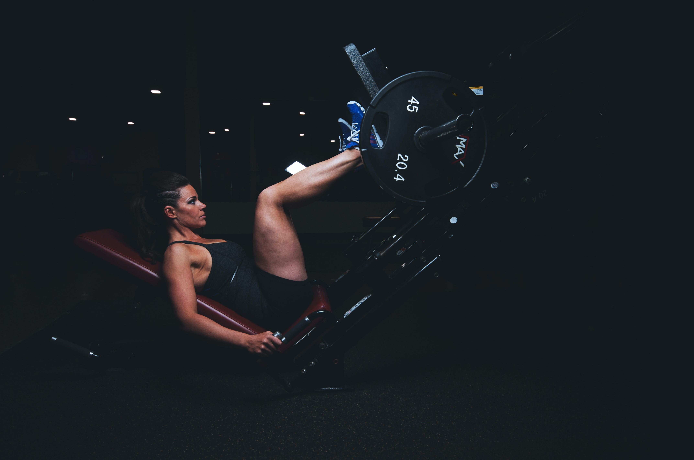

Here Some best excercise

Best Biceps Exercises
- Barbell Curl.
- Chin-Up.
- EZ-Bar Preacher Curl.
- Hammer Curl.
- Incline Dumbbell Curl.
- Facing-Away Cable Curl.
- Reverse-Grip Bent-Over Row.
- Cable Curl.

Exercises for your leg workout
- Back squat. Target your posterior chain — or the back of your body,
including the glutes and hamstrings — with a back squat. ...
- Front squat. ...
- Romanian deadlift. ...
- Good mornings. ...
- Walking lunges. ...
- Reverse lunge. ...
- Lateral lunge. ...
- Stepup.
Abs workouts
- How To Do Each Abs Workout.
- 1 Dumbbell crunch. Reps 10 Rest 10sec. ...
- 2 Tuck and crunch. Reps 15 Rest 10sec. ...
- 3 Modified V-sit. Reps 12 Rest 10sec. ...
- 4 Crunch. Reps 20 Rest 90sec. ...
- 1 Hanging leg raise. Reps 10 Rest 10sec. ...
- 2 Hanging knee raise twist. Reps 12 each side Rest 10sec. ...
- 3 Hanging knee raise. Reps 15 Rest 10sec.
Benefits of physical activity
From Wikipedia, the free encyclopedia
Jump to navigationJump to search
Though people often use physical activity and exercise interchangeably, the terms have different definitions.
“Physical activity” refers to any body movement that burns calories, whether it’s for work or play, daily
chores, or the daily commute. “Exercise,” a subcategory of physical activity, refers to -planned, structured,
and repetitive- activities aimed at improving physical fitness and health.[1] Exercise is a bodily activity that
enhances or maintains physical fitness and overall health and wellness. Physical activity is number one most
common health issue in the world. Staying physically active can help prevent or delay certain diseases,
including some cancers, heart disease and diabetes, and also relieve depression and improve mood.[2]
A research Physical Activity Fundamental to Preventing Disease published by U.S. Department of Health & Human
Services claims that virtually all individuals can benefit from regular physical activity, whether they
participate in vigorous exercise or some type of moderate health-enhancing physical activity
Brain activity
The benefits of physical exercise, especially aerobic exercise, have positive effects on brain function on
multiple fronts, ranging from the molecular to behavioral level. According to a study done by the Department of
Exercise Science at the University of Georgia, even briefly exercising for 20 minutes facilitates information
processing and memory functions.[4]
Exercise affects the brain on multiple fronts. It increases heart rate, which pumps more oxygen to the brain. It
also aids the bodily release of a plethora of hormones, all of which participate in aiding and providing a
nourishing environment for the growth of brain cells.[5]
Exercise stimulates the brain plasticity by stimulating growth of new connections between cells in a wide array
of important cortical areas of the brain. Research from UCLA demonstrated that exercise increased growth factors
in the brain—making it easier for the brain to grow new neuronal connections.[6]
Exercise can come down to improving cognitive skills, decreasing chances of dementia along with reducing damage
and deterioration of the brain tissue. Scientist believe that by maintaining psychical fitness it keeps the
blood flowing normally to brain tissue.[7] When the blood flows normally to the brain tissue it reduces the risk
of damage and deterioration. Blood flow is very important when it comes to keeping the brain young and healthy.
There have also been studies that show that aerobic exercise stimulate the release of growth hormones, which
continues to improve brain function. When getting to a certain age it is prone that one exercises regularly to
keep the brain strong and well functioning, rather than deteriorating. It also reduces the chances of dementia
as it keeps the find functioning and lessens the chances of deterioration.
Some benefits of physical activity on brain health happen right after a session of moderate-to-vigorous physical
activity. Benefits include improved thinking or cognition for children 6 to 13 years of age and reduced
short-term feelings of anxiety for adults. Regular physical activity can help keep your thinking, learning, and
judgment skills sharp as you age. It can also reduce your risk of depression and anxiety and help you sleep
better.[8]